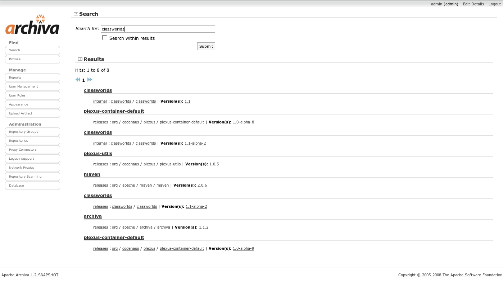
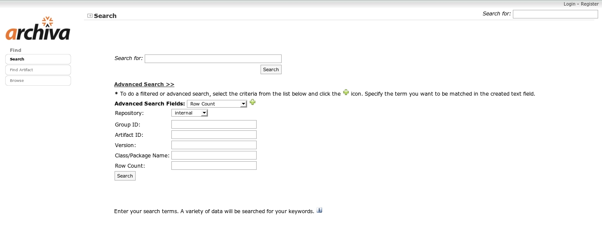

The Search functionality of Archiva allows a user to search for specific artifact references in the repository.
Before artifacts can be searched in Archiva, they need to be indexed first. Aritfacts are indexed during these instances:
During repository scanning, the index-content consumer (see Consumers) creates an indexing task and queues it in an indexing task queue. This indexing task is in turn executed by a task executor and that's where the actual indexing happens. A similar indexing task is also created and queued as artifacts are deployed in the Archiva repository or proxied from a remote repository. The reason behind this is to avoid multiple or simultaneous update of the index (a repository scan might be executing while artifacts are being deployed in the repository). Note: This behavior applies for versions starting 1.2.1.
The repository files that are indexed during repository scan can be configured in the Repository Scanning page, in the Repository Scanning - File Types section (indexable-content). By default, the indexable-content file types are:
**/*.txt **/*.TXT **/*.block **/*.config **/*.pom **/*.xml **/*.xsd **/*.dtd **/*.tld
The contents of all the files in the repository that matches the above configuration will be indexed during repository scan. So when you type a word in the search box, Archiva will search the index for that query string and return all the search hits in the form of a paginated list of artifacts. For example you typed in 'ant', the search result would contain the list of artifacts that use or reference 'ant'.
Archiva can also search the index for java classes, packages, and methods and return a list of artifacts containing the query string. In the previous versions, we need to append the keyword 'bytecode:' before the query string in the search box (like 'bytecode:myMethod'). But since version 1.2, we no longer need to type the keyword. Just type the java class or package name in the search box.. and voila!
The 'Search Results Only' option saves the previous search criteria and use it together with the new query string for searching. When the user types a word in the search box, 'launcher' for example, Archiva will search the query string from the previous list of search hits and return a new paginated list of artifacts.
Below is a sample screenshot of the search results with 'Search Results Only' option selected:
When the user clicks a specific artifact in the search results list, Archiva will direct the user in the Artifact Info page (the same page from the Repository Browse). Otherwise if it is not a pom file (ex. metadata.xml), the file will appear as a file to be downloaded from the browser.
The Advanced Search feature allows user to narrow down the search by specifying the criteria such as group id, artifact id, version, class or package, and the repository to be searched. This feature also provides the user the option to configure the pagination of results by specifying the number of hits to be displayed in each page.
To perform an advanced search, click the Advanced Search >> link from Archiva's Quick Search and the Advanced Search Fields should pop out. Select the search criteria you want to use from the Advanced Search Fields and click the + icon and for each criteria you selected, a text field for that will be created (see the sample screenshot below). For the provided search fields, specify the term(s) for your query and click the Search button.
The Search functionality respects the repository permissions. If the user is not logged in to Archiva and does a search, only those repositories with guest permissions will be searched for the query string. And if the user is logged in to Archiva and does a search, only those repositories in which that user has permission to access will be searched for the query string.